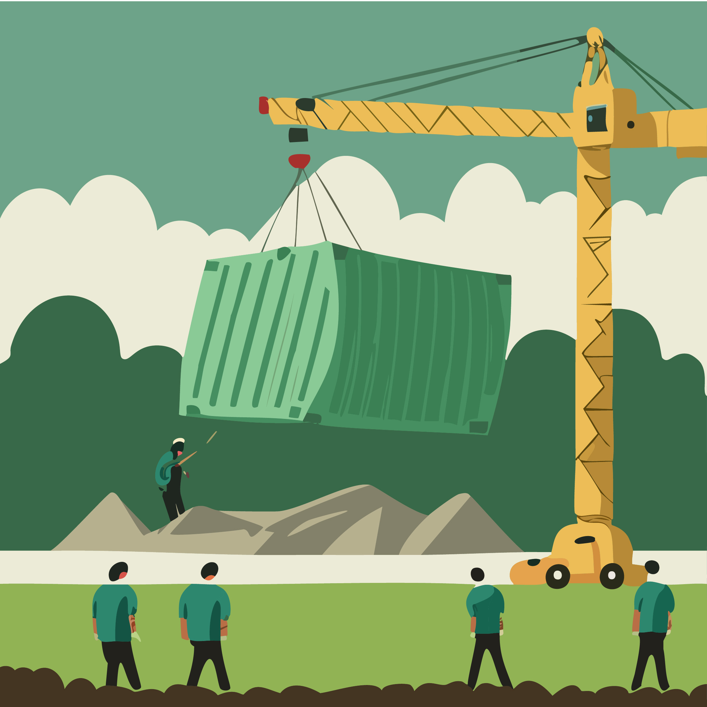

HOE IS HOTEL BUITEN ONTSTAAN?
In 2012 besloten buurtbewoners en lokale ondernemers samen om een vergeten stukje natuur aan de Sloterplas nieuw leven in te blazen. Hotel Buiten begon klein in een tijdelijke bouwcontainer. Sindsdien zijn ze uitgegroeid tot een groene ontmoetingsplaats voor buurtbewoners en andere geinteresseerde. Ruim 60 buurtbewoners hebben geholpen met heb ontwerpen van het gebouw dat grotendeels is opgebouwd uit gerecyclede materialen. Daarnaast hebben ook nog 180 mensen financieel bijgedragen aan dit groene initiatief. Samen is er ruim honderdduizend euro opgehaald om dit project te realiseren.
Het bouwbedrijf Vrijplaats X heeft het gebouw met hulp van buurtbewoners opgebouwd. Verschillende buurtbewoners hielpen op hun vrije zondag met klusjes als schilderen, schuren en vuil afvoeren.
